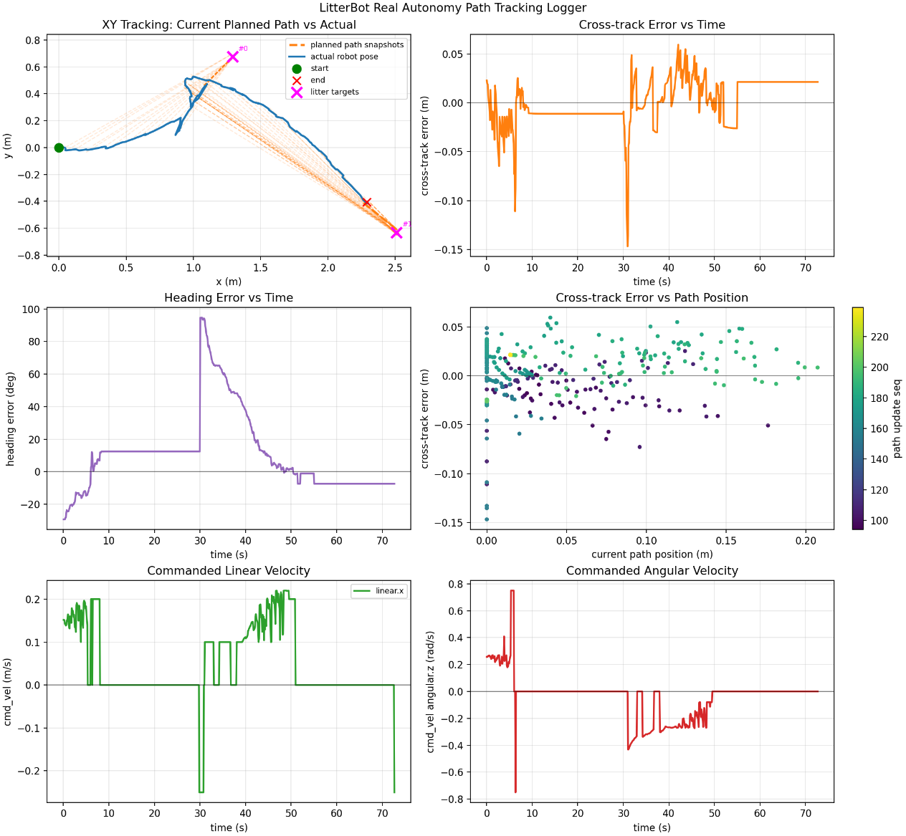
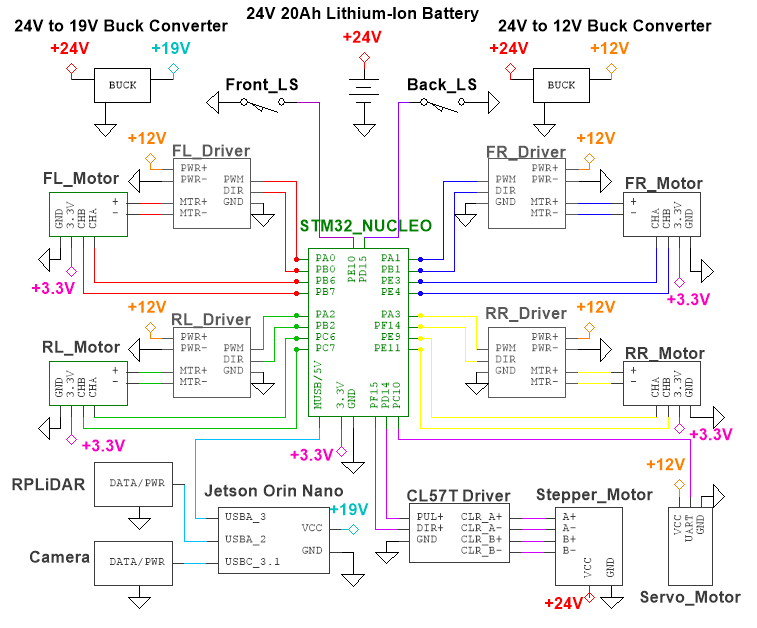
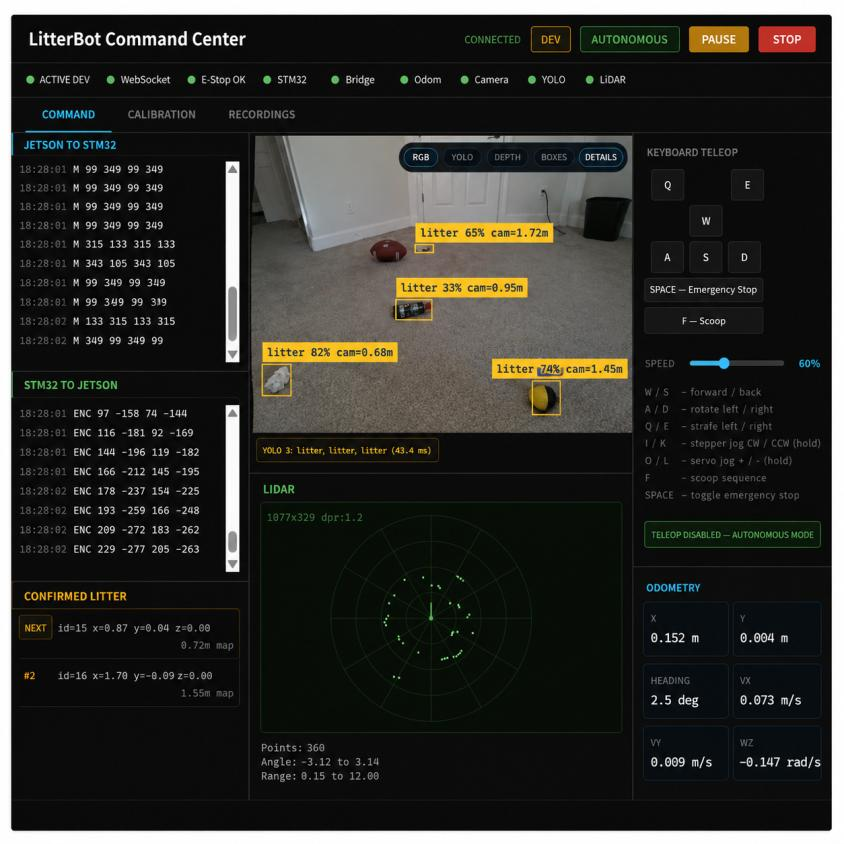

Autonomous Robotics · Computer Vision · Embedded Systems
Autonomous Vision-Based Litter Collection Rover
A three-person senior project (EE 460/463/464) at Cal Poly San Luis Obispo: a rover that detects, approaches, and collects ground-level litter without human input.
Results
What the system achieved.
Overview
How it works.
The rover integrates autonomy, computer vision, embedded real-time control, mecanum-wheel omnidirectional mobility, and a two-degree-of-freedom robotic arm to detect, approach, and collect small ground-level litter such as bottles, wrappers, and paper fragments.
Two-layer compute architecture
Perception, SLAM, and path planning run on an NVIDIA Jetson Orin Nano under ROS 2. Real-time motor control and odometry run on an STM32L4A6ZG microcontroller. Splitting the system this way keeps the hard real-time control loop deterministic while leaving the compute-heavy perception stack free to run at its own cadence.
Perception and navigation
A YOLO-based detector trained on roughly 12,700 images locates litter in the RGB-D camera stream and projects each detection into the map frame. A custom Theta* planner generates paths to each target, and a pure-pursuit controller tracks them while an EKF fuses wheel odometry with LiDAR-based localization.
Mechanical platform
The robot is built on a multi-level aluminum frame with a 3D-printed collection ramp, machined sensor mounts, and custom electronics housings. The completed platform weighs approximately 42 lb.
Gallery
The build, the data, and the system running.




Demonstrations
Autonomous runs.
Two-item collection trajectories, recorded from both the robot's own interface and from the floor.
Documentation
Go deeper.
The full EE 460/463/464 report covers requirements, mechanical and electrical design, the software architecture, and the complete test data behind the results above.